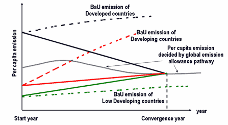

C&C is a proposal in which country per capita emissions become the same after a convergence year. After convergence year, the emission allowance of a country is decided by the country's population. Before convergence year, the emission allowance of a countey is interpolated between the emission of the start year and the emission of the convergence year in the following figure.
